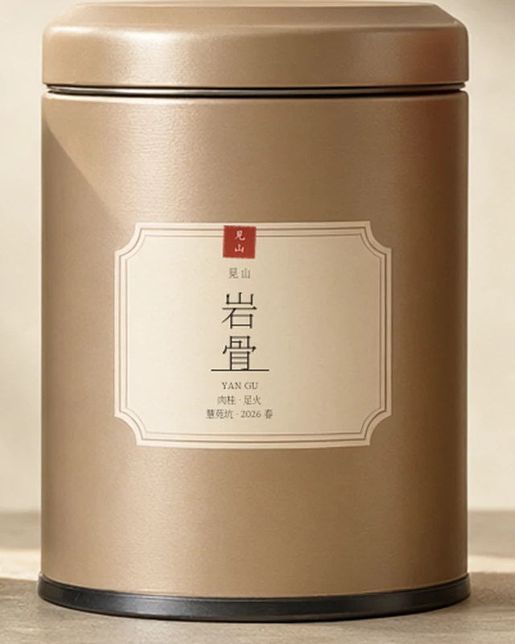
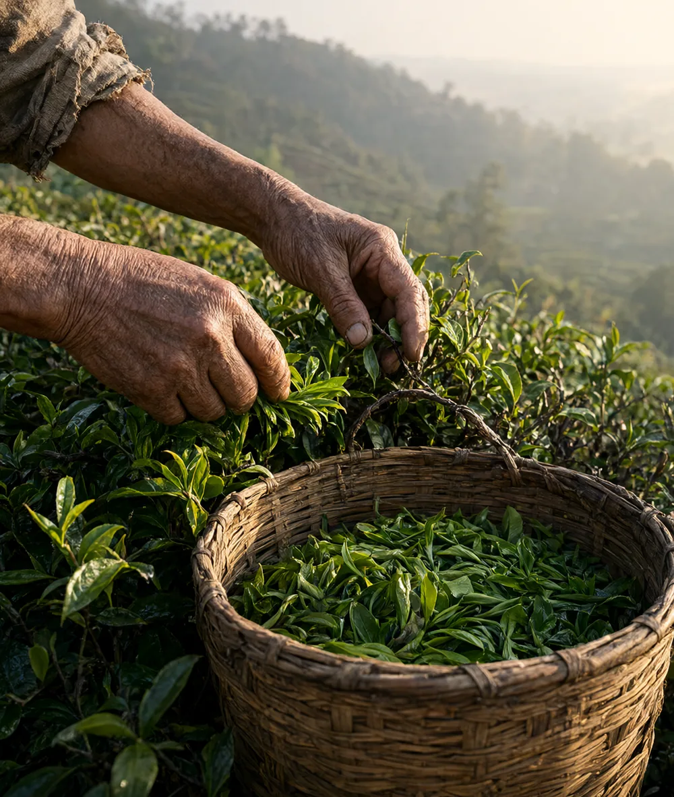
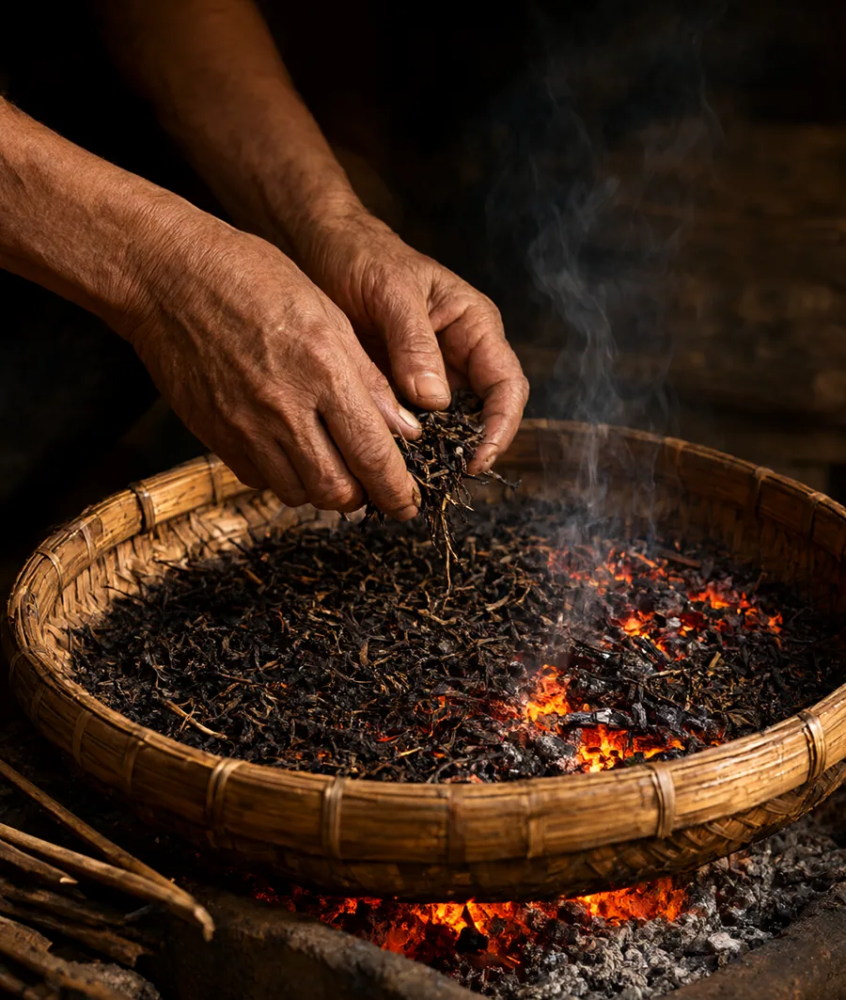

01 — 正岩 · 慧苑坑 LOT 26-A
岩骨 Yan Gu
辛锐的骨，熟果的香。
肉桂 · 足火
桂皮 / 熟果 / 岩韵

01 品饮 / Tasting
先闻香，
再等回甘。
三道荔枝炭足火，退火四十五天。“岩骨”不是形容词，是喝完以后喉咙里那一点被石头压过的凉意。
汤色 / Liquor
橙红 · 明亮
香 Aroma
开汤是桂皮与熟果的辛香，三泡后转出木质、粽叶与矿物感。
汤 Body
汤感厚，入口有轻微收敛，舌面生津快。十泡之后仍有余力。
叶 Leaf
叶底乌褐软亮，边缘红变均匀，展开后能见到完整的“蛤蟆背”。

02 山场 / Origin
枫树窠，
谷底的西晒。
枫树窠在慧苑坑西侧，日照比谷底更短，砾壤里混着风化岩屑。肉桂在这里长得不快，辛锐感却更集中。
慧苑坑 · 正岩核心
27°43′N 117°41′E · 280—320 M
03 工艺 / Craft
火，
决定它的性格。
谷雨后第三天开采，一芽三四叶。做青六次，摇到叶缘红边、兰花香起，再用荔枝炭焙三道，每道间隔七天。
- 火功
- 足火 · 三道
- 退火
- 45 天
- 焙火
- 荔枝炭 · 手工
LOT 26-A焙火记录 / Roast log
- 采摘
- 2026.04.20
- 本批
- 200 斤
- 退火
- 45 天
温度为当日炭温，非烘焙机设定。

- 茶量
- 8 g
- 器皿
- 110 ml 盖碗
- 水温
- 100 °C
- 出汤
- 8 s
| 泡数 | 时间 |
|---|---|
| 1—3 泡 | 8 秒 |
| 4—6 泡 | 12 秒 |
| 7—9 泡 | 20 秒 |
| 10 泡以上 | 30 秒 |
白露可降至 95°C；每泡之间不要盖闷太久。
06 继续喝 / Next